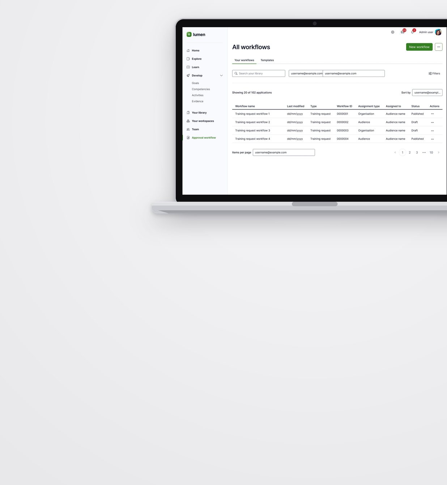
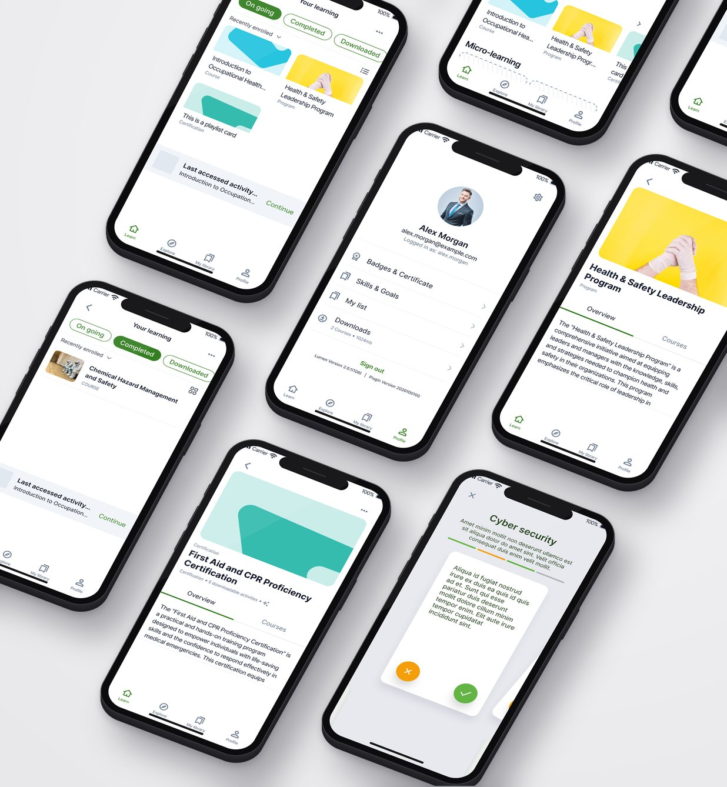
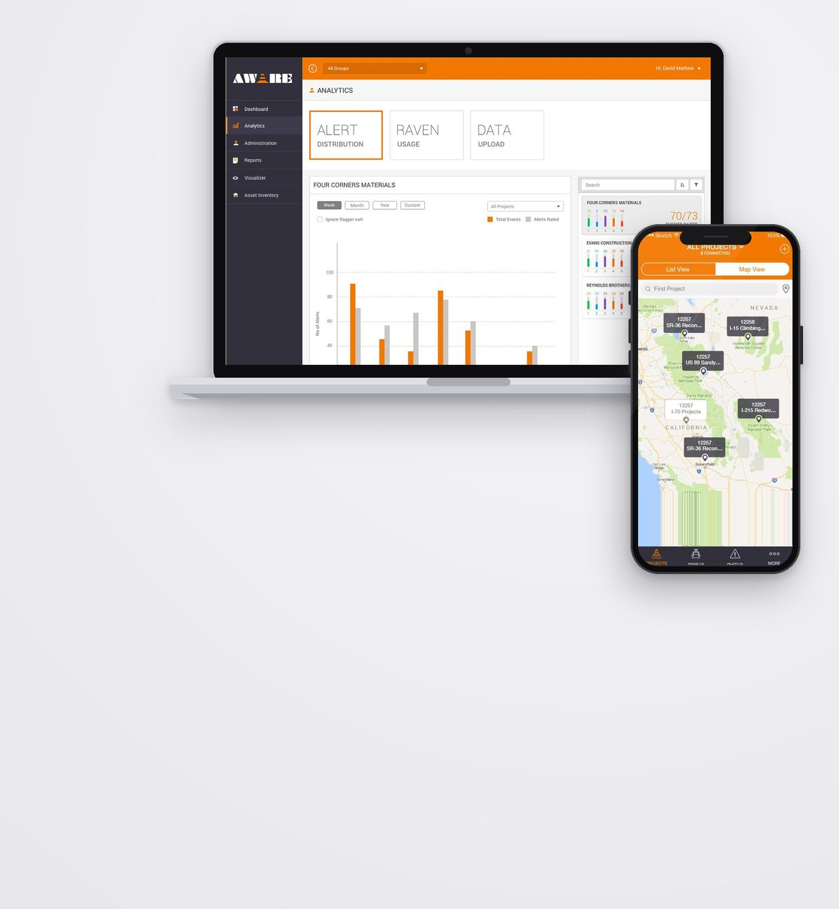
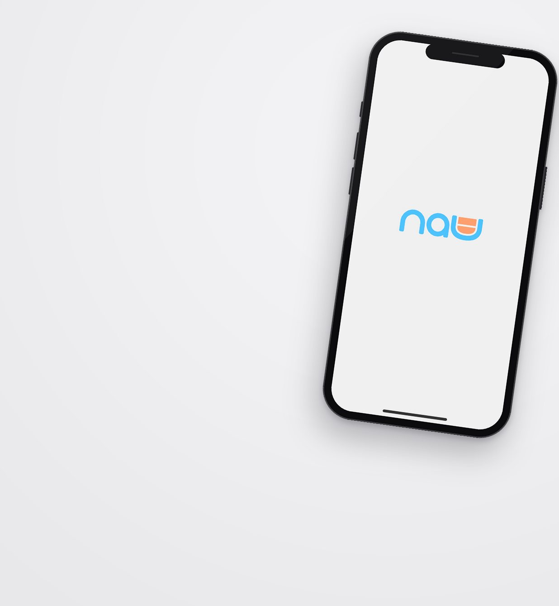
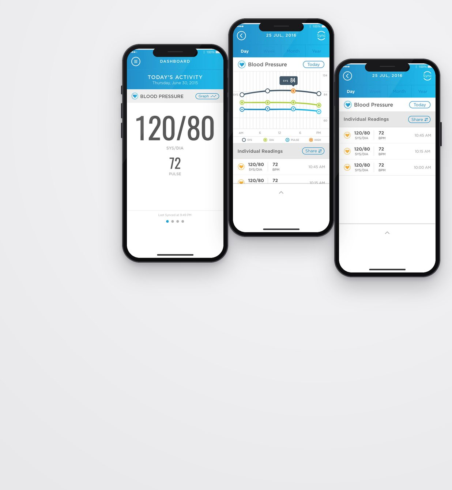
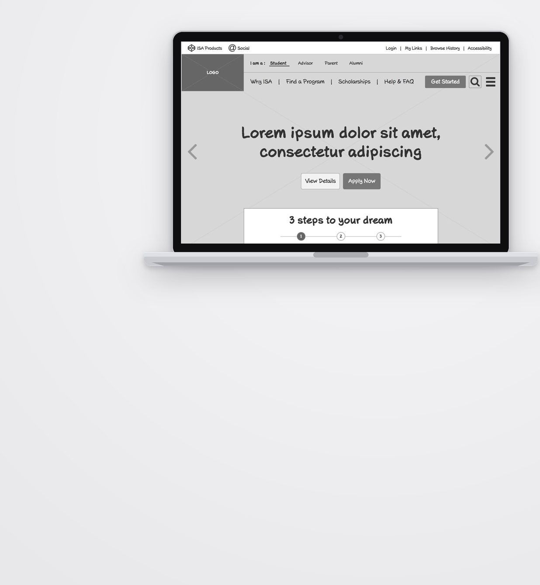

I turn complex enterprise systems into products people trust
- 22+ yearsDesigning digital products
- HFI CUA™Certified Usability Analyst
Turning complex workflows into products people trust
I work end to end, from discovery with product teams and customers to polished, accessible designs that developers can build with confidence.
More about meResearch
I partner with product on discovery workshops, research and journey mapping, so decisions are grounded in how people really work.
- Discovery workshops
- User interviews
- Journey mapping
- Usability testing
- Heuristic reviews
Design
From approval workflows to mobile learning, I design clear, accessible experiences for web and mobile, including AI-powered features.
- UX & interaction design
- Complex workflows
- Mobile apps
- AI features
- Prototyping in Figma
Systems & delivery
I build and maintain design systems and work closely with developers through handover, so what ships matches what was designed.
- Design systems
- Figma tooling
- Design tokens
- Developer handover
- Accessibility
Selected work
Case studies showing how research-led design turns complex problems into products that work.

From a paper form to a guided approval workflow
SF-182 for US federal agencies.
View case study
Learning in your pocket, online or offline
View case study
Keeping highway work-zone crews out of harm’s way
View case study
A marketplace for dhow captains and traders
View case study
New features for an established health app
View case study
Discovery for an education consultancy
View case studyWhere I’ve worked
From a Big Four firm to a fast-paced agency and a global SaaS company, across very different industries.
User Experience Designer
January 2019 – Present
Wellington, New Zealand
Manager, User Experience
February 2016 – January 2019
Kochi, India
Sr. User Experience Designer
April 2012 – February 2016
Kochi, India
Multimedia Team Lead
April 2004 – March 2012
Kochi, India
Curious by nature, methodical by habit
Discover
Workshops, interviews and site visits to understand people, their context and the business goals.
Define
Journey maps, user flows and roles that turn findings into a shared picture and clear priorities.
Design
Wireframes, prototypes and visual design, tested early with users and stakeholders.
Deliver
Design-system components and close work with developers so the experience ships as designed.
What people say
From the product managers and engineers I’ve worked with at Totara.
“He has a strong ability to understand complex problems, ask the right questions, and turn ideas and requirements into clear, practical user experiences. … His designs are also exceptionally clear and thorough — he thinks beyond how something looks and carefully defines behaviours, states, conditions, and interactions.”
“If you’re looking for someone who can talk to a customer and figure out what they’re after, then talk to a developer and figure out the technical boundaries and turn that into a working brilliant design, Binu’s the guy to talk to.”
“He’s one of the best designers I’ve had the chance to work with. … He was able to understand and work within the technical constraints we had really well, producing something that looked and felt great with strong attention to detail and usability.”
Experience across six industries, from government to the dhow harbours of Dubai
Working across very different domains means I learn new contexts fast and bring patterns from one to another.
Learning & compliance
Learning, performance and compliance platforms used by organisations worldwide.
Government
Training approval workflows for US federal and state agencies.
Construction safety
Warning systems that protect highway work-zone crews.
Logistics & maritime
A marketplace connecting dhow captains and traders.
Healthcare
New features for an established health-monitoring app.
Education
Discovery and recommendations for an international education consultancy.
Let’s connect
A UX and product designer crafting clear, human experiences through research, design and design systems.
© 2026 Binu Jose · Wellington, New Zealand